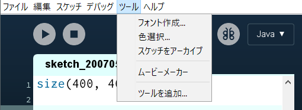
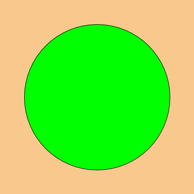

色をつける
カラーコード（RGB）
赤 (Red)、緑 (Green)、青 (Blue)の三つの原色を混ぜて幅広い色を再現。
色の明度は0～255までの256個の数字で表現。
 （出典：wikipedia）
（出典：wikipedia）
コラム
Processingの「色選択」を使うと便利
ProcessingIDEのメニューバー/ツール/色選択...をクリック。


背景色
background(r, g, b);
background(g);
- r：赤（0～255）
- g：緑（0～255）
b：青（0～255）
g：グレースケール。黒～白の明度を指定（0～255）。
サンプル
size(400, 400);
background(248, 200, 140); // 背景色
ellipse(200, 200, 300, 300); // 円

図形の色
図形の色を変えたいときは、fill関数（命令）を使う。
一度、使うと次に指定するまで効果が持続する。
fill(r, g, b);
fill(g);
- r：赤（0～255）
- g：緑（0～255）
b：青（0～255）
g：グレースケール。黒～白の明度を指定（0～255）。
サンプル
size(400, 400);
background(248, 200, 140); // 背景色
fill(0, 255, 0); // 図形の色
ellipse(200, 200, 300, 300); // 円

size(400, 400);
background(248, 200, 140); // 背景色
fill(0, 255, 0); // 図形の色
ellipse(200, 200, 300, 300); // 円
fill(255); // 図形の色
rect(180, 180, 40, 40); // 四角